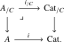
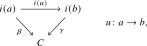
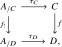
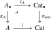
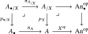
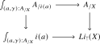
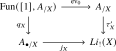
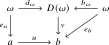
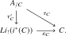

The full faithfulness of the Rezk nerve is a special case of Theorem 15.1.11 below. It gives a criterion for a small full subcategory \(i\colon A\hookrightarrow\Cat\) to determine every small category \(C\) from the presheaf \[ a\longmapsto\Hom_{\Cat}(i(a),C). \] The criterion asks that the categories \(i(a)\) have terminal objects and that the family admit a décalage structure, an operation of appending a new terminal vertex. For the simplex category this is \([n]\mapsto[n]\star[0]=[n+1]\), and the theorem gives the full faithfulness of the Rezk nerve in Corollary 15.1.13.
The proof compares two ways of reconstructing \(C\) from its category of \(A\)-simplices. Evaluation at the last vertex exhibits \(C\) as a localization of that category. We show that the left adjoint to the nerve performs the same localization, so its counit is an equivalence. We begin by constructing the last-vertex evaluation and studying its fibers.
Construction 15.1.1 (Evaluation at the last vertex). Let \(A\) be a small category and \(i\colon A\to\Cat\) a functor. For each
object \(a\) of \(A\), choose a terminal object \(e_a\) of \(i(a)\). For a small
category \(C\), define its category of \(A\)-simplices by the pullback

Recall from Proposition 12.6.7 that the inclusion \(\RFib(C)\hookrightarrow\Cat_{/C}\) has a left adjoint \(L\). The composite \[ A_{/C}\xrightarrow{i_{/C}}\Cat_{/C}\xrightarrow{L}\RFib(C) \] sends \(\gamma\colon i(a)\to C\) to the representable right fibration \(C_{/\gamma(e_a)}\to C\). Indeed, factor \(\gamma\) as a terminal functor \(u\colon i(a)\to X\) followed by a right fibration \(X\to C\). The object \(u(e_a)\) is terminal in \(X\), so it identifies \(X\) with \(C_{/\gamma(e_a)}\) over \(C\). The Yoneda embedding identifies the full subcategory of representable right fibrations with \(C\), giving the desired functor \(\tau_C\).
On a morphism represented by a commutative triangle

The compatibility of \(L\) with composition over the base,
Remark 12.6.8, makes this construction
natural in \(C\). For every \(f\colon C\to D\), we have a commutative square

Lemma 15.1.2. Let \(f\colon C\to D\) be a right fibration. Then is a pullback square.
Proof
Both \(f_!\colon A_{/C}\to A_{/D}\) and the pullback of \(f\) are right fibrations over \(A_{/D}\). It therefore suffices to check their fibers. Over \(\delta\colon i(a)\to D\), the comparison is evaluation at \(e_a\): it sends a lift of \(\delta\) to its value over \(\delta(e_a)\). Since \(e_a\) is terminal and \(f\) is a right fibration, the arrows \(z\to e_a\) and cartesian lifting reconstruct the lift uniquely from this value. Thus the comparison is an equivalence on every fiber.
To show that last-vertex evaluation recovers \(C\), we need to extend an \(A\)-simplex by appending a terminal vertex. The following structure makes this operation available within the indexing category \(A\).
Definition 15.1.3. Let \(A\) be a small category and \(i\colon A\to\Cat\) be a functor. A décalage structure on the pair \((A,i)\) consists of the following data.
(i) For each object \(a\) of \(A\), there is a terminal object \(e_a\) in \(i(a)\).
(ii) There is an object \(\omega\) of \(A\) satisfying \(i(\omega)\simeq[0]\).
(iii) There is an endofunctor \(D\colon A\to A\) equipped with a natural equivalence \[ i\circ D\iso i(-)\star[0]. \]
(iv) There are natural transformations \[ d\colon\id_A\to D\qquad\text{and}\qquad b\colon\omega_A\to D \] (where \(\omega_A\) is the constant \(A\)-indexed functor with value \(\omega\)) and a commutative diagram in \(\Fun(A,\Cat)\), whose value at \(a\) is Here the vertical arrows use the equivalences in (ii) and (iii), and the horizontal maps of the bottom line are the structural embeddings.
Remark 15.1.4 (Objectwise verification of décalage). In Definition 15.1.3, it suffices to give the equivalences in (iii) and the compatibility diagrams in (iv) objectwise, provided that \(d\) and \(b\) are natural transformations. The natural equivalence and its compatibilities can then be constructed as follows.
Adjoining a terminal object is left adjoint to the forgetful functor from small categories with a specified terminal object and functors preserving it. Indeed, for a category \(E\) with terminal object \(t\), extending \(C\to E\) to \(C\star[0]\to E\) with cone value \(t\) is the same as lifting it to \(E_{/t}\), by Lemma 3.7.3. Since \(E_{/t}\to E\) is an equivalence, this extension is unique. The identification is natural in \(C\) and in functors preserving \(t\), and therefore gives the asserted adjunction.
The points selected by \(i(b_a)\) are terminal by the objectwise compatibility diagrams. Naturality of \(b\) thus makes \(i\circ D\) a diagram of categories with specified terminal objects and functors preserving them. Applying the preceding adjunction to \(A\)-indexed diagrams, using Proposition 4.4.4, the transformation \(i(d)\) extends to a natural comparison \[ i(-)\star[0]\longrightarrow i\circ D \] compatible with \(d\) and \(b\). At each \(a\), the inverse of the given objectwise equivalence is another such extension of \(i(d_a)\). Uniqueness of extension identifies it with the component of this comparison, which is consequently an equivalence. Inverting the natural comparison gives (iii) together with the commutative diagram in \(\Fun(A,\Cat)\) required by (iv).
When \(C\) has a terminal object \(t\), an \(A\)-simplex extends uniquely along \(d_a\) by giving the appended vertex the value \(t\). This construction lifts the décalage structure to the category of \(A\)-simplices over \(C\).
Lemma 15.1.5 (Décalage on categories of simplices). Let \((A,i)\) be equipped with a décalage structure, and let \(C\) be a small category with terminal object \(t\). Write \(p\colon A_{/C}\to A\) for the projection and \(A^t_{/C}\) for the fiber of \(\tau_C\) at \(t\). Then \((A_{/C},i\circ p)\) inherits a décalage structure with distinguished object \((\omega,t)\). Its endofunctor \(D_C\) takes values in \(A^t_{/C}\), and the structure restricts to this full subcategory.
Proof
We construct \(D_C\) by extending each simplex \(\gamma\colon i(a)\to C\)
across \(i(d_a)\) and sending the appended vertex to \(t\).
Write \(p\colon A_{/C}\to A\) for the projection and form the pullbacks
 An object of \(\tilde A\) is a pair \((a,\gamma)\) with
\(\gamma\colon i(D(a))\to C\) preserving terminal objects. By naturality
of \(b\) and condition (iv) of Definition 15.1.3, every \(i(D(u))\)
preserves the appended terminal vertex. Thus this full subcategory of
\(D^*A_{/C}\) is stable under right-fibration transport, and its projection
to \(A\) is a right fibration.
An object of \(\tilde A\) is a pair \((a,\gamma)\) with
\(\gamma\colon i(D(a))\to C\) preserving terminal objects. By naturality
of \(b\) and condition (iv) of Definition 15.1.3, every \(i(D(u))\)
preserves the appended terminal vertex. Thus this full subcategory of
\(D^*A_{/C}\) is stable under right-fibration transport, and its projection
to \(A\) is a right fibration.
Restriction along \(i(d_a)\) gives a morphism of right fibrations \[ \varphi\colon\tilde A\to A_{/C} \] over \(A\). Its fiber over \(\gamma\colon i(a)\to C\) is the anima of extensions \(i(a)\star[0]\to C\) with cone value \(t\). Such extensions are lifts of \(\gamma\) to \(C_{/t}\). Since \(C_{/t}\to C\) is an equivalence, the fiber is contractible. Hence \(\varphi\) is an equivalence.
Choose an inverse to \(\varphi\) over \(A\) and define \(D_C\) by the composite \[ A_{/C}\xrightarrow{\varphi^{-1}}\tilde A \hookrightarrow D^*A_{/C}\longrightarrow A_{/C}. \] The maps \(d_a\) and \(b_a\) give natural transformations \[ \id_{A_{/C}}\xrightarrow{d_C}D_C\xleftarrow{b_C}\omega_C, \] where \(\omega_C\) is the constant functor at the simplex \(i(\omega)\simeq[0]\xrightarrow{t}C\). The first transformation is induced by restriction along \(i(d_a)\); the second uses the identification of the appended vertex with \(t\).
By construction, \(pD_C\simeq Dp\), and \(d_C\) and \(b_C\) project to \(d\) and \(b\). We therefore have equivalences \[ i(p(D_C(\xi)))\simeq i(D(p(\xi)))\simeq i(p(\xi))\star[0], \] natural in \(\xi:A_{/C}\). Their compatibility with \(d_C\) and \(b_C\) is inherited from the compatibility diagram for the original décalage structure. Together with the terminal objects \(e_a\) of \(i(a)\) and the distinguished simplex \((\omega,t)\), these data give the required décalage structure on \((A_{/C},i\circ p)\).
Every appended vertex has value \(t\), so \(D_C\) takes values in \(A^t_{/C}\), and \((\omega,t)\) also belongs to this full subcategory. All the data consequently restrict to a décalage structure there.
The lifted structure gives the two contractions needed to study last-vertex evaluation.
Lemma 15.1.6. Let \(i\colon A\to\Cat\) be a functor indexed by a small category and equipped with a décalage structure. We consider a small category \(C\) with a terminal object \(t\), and let \(A^t_{/C}\) be the fiber of the functor \(\tau\colon A_{/C}\to C\) at \(t\). Then \(A^t_{/C}\) is weakly contractible and the full embedding \(A^t_{/C}\to A_{/C}\) is a terminal functor.
Proof
By Lemma 15.1.5, there are natural transformations \[ \id_{A_{/C}}\xrightarrow{d_C}D_C\longleftarrow\omega_C, \] where \(D_C\) takes values in \(A^t_{/C}\) and \(\omega_C\) is constant at \((\omega,t)\). After restricting to \(A^t_{/C}\) and taking geometric realizations, these transformations give homotopies between the identity and a constant map. Hence \(A^t_{/C}\) is weakly contractible.
To prove that its inclusion is terminal, fix \(\xi:A_{/C}\). On the category \((A^t_{/C})_{\xi/}\), consider the endofunctor \[ (\xi\to\zeta)\longmapsto (\xi\to\zeta\xrightarrow{d_C(\zeta)}D_C(\zeta)). \] The transformation \(d_C\) gives a map from the identity endofunctor to this endofunctor. Naturality of \(d_C\) gives a map to it from the constant object \(d_C(\xi)\colon\xi\to D_C(\xi)\), using \(D_C(\xi\to\zeta)\). Thus every such coslice is weakly contractible, which proves terminality by Corollary 9.5.7 and duality.
Proposition 15.1.7. Let \(i\colon A\to\Cat\) be a functor indexed by a small category and equipped with a décalage structure. For any small category \(C\), the evaluation at the terminal object of \(i(a)\) defines a weakly proper functor with weakly contractible fibers \[ \tau_C\colon A_{/C}\to C\, . \] In particular, the category \(C\) is the localization of \(A_{/C}\) by the class of morphisms that are sent to identities by \(\tau_C\) in \(C\).
Proof
For \(x:C\), the projection \(C_{/x}\to C\) is a right fibration. By Lemma 15.1.2, \[ A_{/(C_{/x})}\simeq A_{/C}\times_C C_{/x}. \] Under this identification, the fiber of \(\tau_C\) at \(x\) is the fiber of \(\tau_{C_{/x}}\) at the terminal object \(\id_x\). By Lemma 15.1.6, it is weakly contractible and its inclusion into \(A_{/C}\times_C C_{/x}\) is terminal. This is precisely the weak properness condition. The localization assertion now follows from Proposition 13.1.16.
We now compare this localization with the left adjoint to the nerve. From here on, assume that \(i\) is fully faithful. For a presheaf \(X\), the left adjoint \(Li_!(X)\) is obtained by gluing the categories \(i(a)\) indexed by the elements of \(X\). The next construction compares this colimit with the category of elements \(A_{/X}\).
Construction 15.1.8. Let \(i\colon A\to\Cat\) be fully faithful and equipped with a
décalage structure. Pull back the universal cocartesian fibration:

The nerve and its left adjoint form an adjunction
\[
Li_!\colon\PSh(A)\rightleftarrows\Cat\colon i^*
\]
Given a presheaf \(X\colon A\catop\to\An\), we form the pullback squares below.
  
Lemma 15.1.9. Let \(i\colon A\to\Cat\) be fully faithful and suppose that \((A,i)\) is equipped with a décalage structure. For every small category \(C\), the functor \[ \tau_C\colon A_{/C}\longrightarrow C \] exhibits \(C\) as the localization of \(A_{/C}\) at the morphisms whose image in \(A\) is a last vertex morphism.
Proof
By Proposition 15.1.7, the functor \(\tau_C\) is the localization at the family \(V\) of morphisms that it sends to identities. It sends every last vertex morphism to an isomorphism. It therefore suffices to show that every member of \(V\) becomes invertible after localizing at the last vertex morphisms.
Let \(u\) be a morphism in \(A_{/C}\) that is sent to an identity by \(\tau_C\).
Its data can be displayed as

Since \(i\) is fully faithful and \(i(\omega)=[0]\), the object \(\omega\) is terminal in \(A\). Let \(p\colon D(\omega)\to\omega\) be the unique morphism. For the constant labels just described, it defines a morphism in \(A_{/C}\) and satisfies \[ p b_\omega=\id_\omega=p d_\omega. \] After inverting \(b_\omega\), the first equality identifies \(p\) with \(b_\omega^{-1}\), and the second then identifies \(d_\omega\) with \(b_\omega\). Thus \(d_\omega\) is invertible. The relations \[ v b_\omega=e_b \qquad\text{and}\qquad v d_\omega=u e_a \] now show successively that \(v\) and \(u\) are invertible. Hence every member of \(V\) is inverted by the localization at last vertex morphisms. The universal property of the localization at \(V\) now proves the claim.
For the nerve of a category, we have identified the morphisms that must be inverted. The next lemma gives the same description for an arbitrary presheaf: \(Li_!(X)\) is the localization of \(A_{/X}\) at last vertex morphisms. The arrow category in Construction 15.1.8 allows us to compare the two localizations.
Lemma 15.1.10. Let \(W\) be the family of morphisms in \(A_{/X}\) whose image in \(A\) is a last vertex morphism. We also denote by \(\tilde{W}\) the family of morphisms in \(\Fun([1],A_{/X})\) whose image by the functor \(\ev_{0}\) is in \(W\). Then the functor \(\ev_0\) induces an equivalence of localizations \[ \Fun([1],A_{/X})[\tilde{W}^{-1}]\iso(A_{/X})[W^{-1}]\, . \] Furthermore, the functor \(q_X\) sends morphisms in \(\tilde{W}\) to cocartesian morphisms relatively to the projection of \(A_{\bullet/X}\) to \(A_{/X}\), and the composite \(j_Xq_X\) induces an equivalence \[ \Fun([1],A_{/X})[\tilde{W}^{-1}]\iso Li_!(X)\, . \]
Proof
The functor \(\ev_0\) has a fully faithful left adjoint sending an object of \(A_{/X}\)
to its identity (the latter being seen as an object of \(\Fun([1],A_{/X})\)).
The counit of this adjunction consists of squares of the form below.
 In particular, the counits of this adjunction all belong to \(\tilde{W}\).
The units belong to \(W\) because they are isomorphisms.
The functor \(\ev_0\) sends \(\tilde{W}\) into \(W\), and its left adjoint sends
\(W\) into \(\tilde{W}\).
Thus the adjunction descends to the two localizations by
Lemma 14.1.5, with invertible unit and
counit. This proves the first equivalence.
In particular, the counits of this adjunction all belong to \(\tilde{W}\).
The units belong to \(W\) because they are isomorphisms.
The functor \(\ev_0\) sends \(\tilde{W}\) into \(W\), and its left adjoint sends
\(W\) into \(\tilde{W}\).
Thus the adjunction descends to the two localizations by
Lemma 14.1.5, with invertible unit and
counit. This proves the first equivalence.
Using Remark 12.4.17, we can describe objects of \(A_{\bullet/X}\) as triples \((a,\gamma,x)\) with \(a\) an object of \(A\), \(\gamma : X_a\), and \(x : i(a)^\simeq\). Fix a morphism \((a,\gamma)\to(b,\delta)\) in \(A_{/X}\) with image \(f\colon a\to b\). A morphism from \((a,\gamma,x)\) to \((b,\delta,y)\) over this base morphism is specified by \(u\colon i(f)(x)\to y\) in \(i(b)\); write it as \((f,u)\). Factoring \((f,u)\) as the canonical cocartesian lift \((f,\id_{i(f)(x)})\) followed by the vertical morphism \((\id_b,u)\) shows that it is cocartesian if and only if \(u\) is an isomorphism in \(i(b)\), by Lemma 4.5.12. We also know that the localization of \(A_{\bullet/X}\) by cocartesian morphisms precisely is \(Li_!(X)\). An object of \(\Fun([1],A_{/X})\), equivalently a morphism in \(A_{/X}\), essentially is a pair \((u,\gamma)\) with \(u\colon a\to b\) a morphism in \(A\) and \(\gamma : X_b\). The functor \(q_X\) sends such a pair \((u,\gamma)\) to the triple \((b,\gamma,x)\), where \(x\) is the image of the terminal object \(e_a : i(a)^\simeq\) in \(i(b)\) through \(u\). For a morphism in the arrow category, its fiber component under \(q_X\) is obtained by applying the target arrow to the canonical comparison \(i(f)(e_a)\to e_{a'}\), where \(f\) is the image of that morphism under \(\ev_0\). In particular, if \(f\) is a last vertex morphism, this comparison is an isomorphism. Thus \(q_X\) sends every member of \(\tilde W\) to a cocartesian morphism.
Under the identifications in
Construction 15.1.8, the functor \(q_X\)
is the Grothendieck construction of the fiberwise localization functors
\(\tau_{i(a)}\colon A_{/i(a)}\to i(a)\). It is therefore a localization by
Theorem 8.8.9. Let \(K\) be the inverse
image under \(q_X\) of the cocartesian morphisms in \(A_{\bullet/X}\). Since
\(q_X\) is a localization and every cocartesian morphism has a preimage under
\(q_X\), the composite \(j_Xq_X\) is the localization at \(K\). For the last
assertion, represent an object \(x : i(a)\) by the corresponding morphism
\(x\colon\omega\to a\) in \(A\). A morphism
\(i(u)(x)\to y\) in \(i(b)\) is represented, using \(i(D(\omega))=[1]\), by a
commutative diagram
 The square with horizontal maps \(x\) and \(v\) and vertical maps \(d_\omega\)
and \(u\) is a morphism in \(\Fun([1],A_{/X})\) mapping to the prescribed
morphism in \(A_{\bullet/X}\).
The square with horizontal maps \(x\) and \(v\) and vertical maps \(d_\omega\)
and \(u\) is a morphism in \(\Fun([1],A_{/X})\) mapping to the prescribed
morphism in \(A_{\bullet/X}\).
We claim that localization at \(K\) is the same as localization at \(\tilde W\). One inclusion follows from the preceding calculation: \(\tilde W\subseteq K\). Conversely, let \(h\) belong to \(K\), and write \(f=\ev_0(h)\). If the target of the square defining \(h\) lies over \((b,\gamma):A_{/X}\), then \(f\) may be viewed as a morphism in \(A_{/i(b)}\). Its image under \(\tau_{i(b)}\colon A_{/i(b)}\to i(b)\) is precisely the fiber component of \(q_X(h)\), hence is an isomorphism because \(q_X(h)\) is cocartesian. By Lemma 15.1.9, \(f\) becomes invertible after localizing \(A_{/i(b)}\) at its last vertex morphisms. The domain functor from \(A_{/i(b)}\), equivalently from the corresponding slice of \(A_{/X}\), to \(A_{/X}\) preserves last vertex morphisms. It follows that \(f\) becomes invertible in \((A_{/X})[W^{-1}]\). The first equivalence of this lemma now shows that \(h\) becomes invertible in \(\Fun([1],A_{/X})[\tilde W^{-1}]\). Thus every member of \(K\) is already inverted by localization at \(\tilde W\).
The two universal properties therefore identify the localizations at \(K\) and at \(\tilde W\). Consequently, the composite \(j_Xq_X\) gives \[ \Fun([1],A_{/X})[\tilde W^{-1}] \iso A_{\bullet/X}[\mathrm{Cocart}^{-1}] \iso Li_!(X), \] as required.
Theorem 15.1.11 (Abstract nerve theorem). Let \(A\) be small and let \(i\colon A\to\Cat\) be fully faithful. If \((A,i)\) admits a décalage structure, then the functor \[ i^*\colon\Cat\to\PSh(A) \] defined by the rule \(C\mapsto (a\mapsto\Hom_\Cat(i(a),C))\) is fully faithful.
Proof
For a small category \(C\), it suffices to show that the counit
\(\varepsilon_C\colon Li_!(i^*(C))\to C\) is an equivalence.
Identify \(A_{/i^*(C)}\) with \(A_{/C}\). The counit is induced by the
evaluation maps \(\gamma\colon i(a)\to C\), so naturality of \(\tau\) in
Construction 15.1.8 gives the
commutative triangle

For the simplex category, décalage is simply the operation of adjoining a new last vertex.
Proposition 15.1.12. The canonical embedding \(i\colon\simp\hookrightarrow\Cat\) admits a décalage structure.
Proof
The terminal object of \(i([n])=[n]\) is its last vertex \(n\). Let \(\omega=[0]\), and define \[ D([n])=[n+1]=[n]\star[0]. \] For a morphism \(u\colon[m]\to[n]\), set \(D(u)=u\star\id_{[0]}\). The natural transformation \(d\colon\id_\simp\to D\) is given by the inclusion of the first summand \([n]\hookrightarrow[n]\star[0]\), and \(b\colon\omega_\simp\to D\) is given by the inclusion of the last vertex \([0]\hookrightarrow[n]\star[0]\). These maps are natural because the join is functorial. For every \([n]\), the resulting diagram is and hence satisfies condition (iv) of Definition 15.1.3.
Corollary 15.1.13. The Rezk nerve functor \(N\colon\Cat\to\PSh(\simp)\) is fully faithful.
Proof
We apply Theorem 15.1.11 in the case \(A=\simp\) with the canonical embedding \(i\colon\simp\hookrightarrow\Cat\). The required décalage structure is supplied by Proposition 15.1.12.